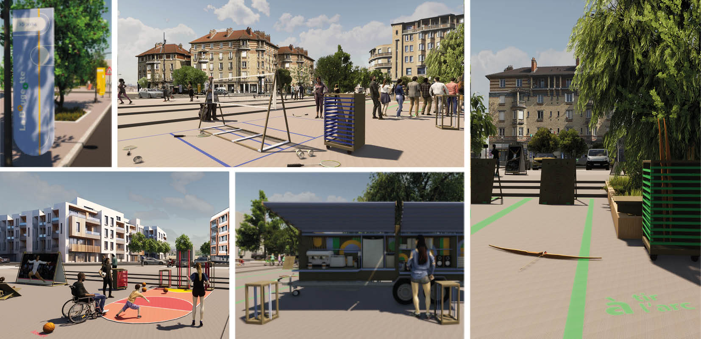
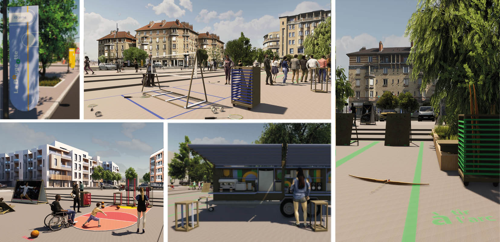

La Bougeotte
2023
Mini Maousse 9 - Projet finaliste du concours
En collaboration avec Angèle Delétoille, designer de produits.
La Bougeotte a pour mission de créer un espace convivial et rassembleur tout au long
des Jeux olympiques de Paris, au sein de la Plaine Commune en Seine-Saint-Denis.
La remorque incarne l'esprit sportif et encourage la pratique sportive en milieu urbain.
L'objectif principal est de créer un espace adaptable en fonction des différents terrains.
Dans une démarche responsable, les matériaux utilisés proviennent principalement du réemploi
et sont issus de filières responsables.
Pour faciliter son implantation, la remorque repose sur un système extensible,
ainsi qu'un double fond et plafond, permettant de se déployer.
L'utilisation de coffres et de systèmes de rangement offre de nouvelles possibilités d'aménagement.
Cette approche ouvre également de nouvelles perspectives d'utilisation de la remorque après les Jeux Olympiques.
 
